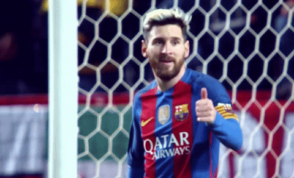

Strona
|  | |||||
Lionel Andrés Messi Cuccittini – argentyński piłkarz występujący na pozycji napastnika w hiszpańskim klubie FC Barcelona, której jest kapitanem oraz w reprezentacji Argentyny, której także jest kapitanem.W wieku 21 lat Messi otrzymał nominację do nagrody Złotej Piłki i tytułu Piłkarza Roku FIFA.Srebrny medalista Mistrzostw Świata 2014, trzykrotny wicemistrz Copa América z 2007, 2015, 2016. W 2009 roku zdobył obydwa te wyróżnienia, a w kolejnych trzech latach sięgnął po nowo powstałą Złotą Piłkę FIFA. Ponownie udało mu się zdobyć Złotą Piłkę w latach 2015 oraz 2019 i stał się samodzielnym rekordzistą. W 2011 i 2015 roku zdobył tytuł Piłkarza Roku w Europie według UEFA. Messi to piąty piłkarz w historii, po Johanie Cruijffie, Michelu Platinim, Marco van Bastenie i Cristiano Ronaldo, który zdobył trzy Złote Piłki, oraz jedyny, który uczynił to cztery razy z rzędu. Z powodu niskiego wzrostu i stylu gry często porównywany jest do Diego Maradony, który sam nazwał go swoim „następcą”. | |||||